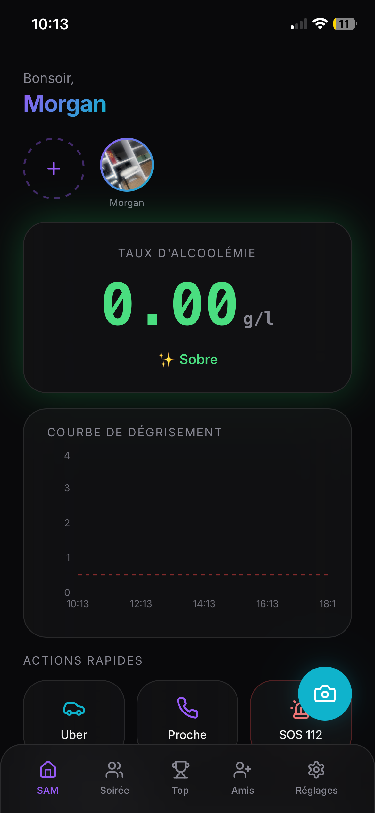

Stay Sharp. Stay Safe.
Night Watch rend vos soirées plus amusantes et sécurisées avec vos amis. Éthylomètre partagé, boutons d'urgence, localisation, stories et bien plus encore.
Disponible sur iOS et Android via PWA

Des fonctionnalités pensées pour vos soirées
Suivi en temps réel du niveau d'alcool du groupe. Restez lucide ensemble.
Besoin d'aide? Un seul clic pour alerter vos amis ou les services d'urgence.
Capturez et partagez vos meilleurs moments avec le groupe en direct.
Retrouvez facilement tous vos amis sur une carte interactive et sécurisée.
Gamification ludique pour rendre chaque soirée mémorable et amusante.
Détection automatique des boissons en quelques secondes. Technologie avancée.
Communication instantanée avec tous vos amis pour coordonner la soirée.
Consultez vos statistiques et revivez vos meilleurs moments passés.
Tout ce que vous voulez savoir
Night Watch respecte scrupuleusement le RGPD. Toutes vos données sont chiffrées de bout en bout. Vos informations de localisation et de consommation restent privées et ne sont partagées qu'avec les amis que vous sélectionnez. Nous n'utilisons jamais vos données à des fins commerciales.
C'est une fonctionnalité unique où vous pouvez enregistrer vos consommations d'alcool et celles de vos amis. L'app calcule un niveau de vigilance pour chacun, basé sur vos boissons. Cela aide à responsabiliser le groupe et à prendre soin les uns des autres. Ce n'est pas un jugement, c'est de la bienveillance!
En un clic sur le bouton SOS, vos amis présents dans l'app reçoivent une alerte instantanée avec votre localisation. Optionnellement, vous pouvez aussi alerter les services d'urgence locaux. Tous vos amis sont informés pour vous aider rapidement. Votre sécurité est notre priorité.
Night Watch est une Progressive Web App (PWA), ce qui signifie qu'elle fonctionne comme une app native sur iOS et Android. Cliquez sur le bouton "Installer" en haut, puis sur "Ajouter à l'écran d'accueil" ou "Installer l'app". Aucun téléchargement App Store nécessaire!
Le classement par soirée ajoute une dimension ludique et amusante à vos sorties! Ce n'est jamais un jugement. C'est une façon de gamifier l'expérience, de vous rappeler de bons souvenirs et de créer une saine compétition amicale. À la fin de la soirée, c'est le rire et les bons moments qui comptent!
Des avis sincères de la communauté Night Watch
"Night Watch a complètement changé notre façon de sortir. Nous savons tous que tout le monde va bien, et c'est tellement rassurant. Plus jamais de panique pour retrouver quelqu'un!"
"J'adore les stories et le classement! Ça rend chaque soirée plus mémorable. Et franchement, le bouton SOS m'a sauvé la mise une nuit. Merci Night Watch!"
"En tant que parent, je suis tranquille. Ma fille est en sécurité à ses soirées. C'est une app mature qui pense vraiment à la prevention sans être moralisatrice. Bravo!"
Installez Night Watch maintenant. C'est gratuit, rapide et sécurisé.